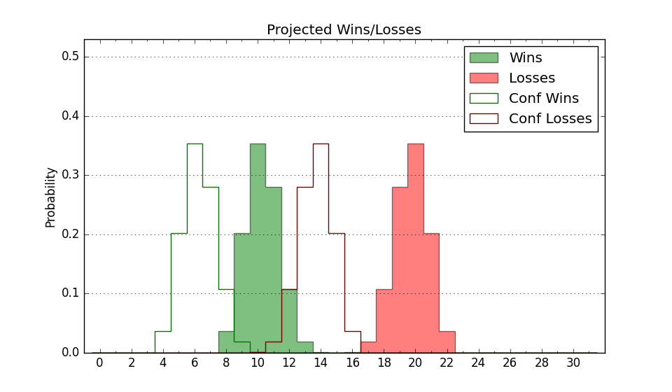

| Home | Game Probabilities | Conferences | Preseason Predictions | Odds Charts | NCAA Tournament |
| City: | Bakersfield, California | |
| Conference: | Big West (8th)
| |
| Record: | 6-12 (Conf) 8-19 (Overall) | |
| Ratings: | Comp.: -11.3 (292nd) Net: -11.3 (292nd) Off: 94.5 (325th) Def: 105.8 (232nd) SoR: 0.0 (150th) |
| Remaining | ||||||
|---|---|---|---|---|---|---|
| Date | Opponent | Win Prob | Pred. | |||
| 3/2 | @ Long Beach St. (169) | 14.6% | L 63-76 | |||
| 3/4 | @ UC Irvine (98) | 7.4% | L 57-74 | |||
| Previous | Game Score | |||||
| Date | Opponent | Win Prob | Result | Off | Def | Net |
| 11/11 | @Utah (57) | 4.1% | L 44-72 | -14.0 | -0.1 | -14.1 |
| 11/16 | @Idaho (289) | 34.1% | W 52-43 | -11.5 | 34.3 | 22.8 |
| 11/22 | (N) Tex A&M Corpus Chris (214) | 32.2% | W 73-63 | 7.3 | 14.8 | 22.1 |
| 11/23 | @UTEP (184) | 16.5% | L 67-68 | 12.4 | 2.9 | 15.3 |
| 11/25 | (N) Alcorn St. (282) | 45.9% | L 54-62 | -24.3 | 13.4 | -10.8 |
| 12/3 | @Dartmouth (285) | 32.0% | L 54-79 | -15.7 | -16.7 | -32.4 |
| 12/6 | @San Jose St. (97) | 7.4% | L 48-58 | -5.3 | 16.7 | 11.4 |
| 12/17 | Abilene Christian (199) | 43.3% | L 59-65 | -5.3 | 4.2 | -1.1 |
| 12/20 | Fresno St. (142) | 32.2% | L 48-56 | -9.5 | -2.5 | -11.9 |
| 12/29 | @UC Riverside (149) | 12.7% | L 59-71 | -3.8 | 0.1 | -3.7 |
| 12/31 | UC Irvine (98) | 21.4% | L 75-79 | 12.4 | -7.1 | 5.2 |
| 1/5 | Cal Poly (306) | 68.5% | W 61-51 | 3.2 | 5.0 | 8.2 |
| 1/7 | @UC Davis (141) | 12.0% | L 48-67 | -16.3 | 4.4 | -11.9 |
| 1/11 | UC Santa Barbara (103) | 23.7% | L 48-60 | -15.3 | 0.5 | -14.8 |
| 1/14 | UC San Diego (261) | 58.3% | W 56-52 | -4.9 | 5.0 | 0.1 |
| 1/16 | @Cal St. Fullerton (116) | 9.3% | L 46-76 | -20.5 | -3.0 | -23.5 |
| 1/21 | @UC Santa Barbara (103) | 8.4% | L 58-76 | 7.2 | 0.2 | 7.5 |
| 1/26 | UC Davis (141) | 31.7% | L 58-79 | 2.6 | -29.7 | -27.2 |
| 1/28 | @Hawaii (128) | 10.4% | L 69-72 | 31.9 | -15.0 | 17.0 |
| 2/2 | UC Riverside (149) | 33.2% | W 82-76 | 22.7 | -3.7 | 19.0 |
| 2/4 | @UC San Diego (261) | 29.1% | W 75-69 | 17.2 | 7.0 | 24.2 |
| 2/9 | Cal St. Northridge (314) | 69.9% | W 73-58 | 14.3 | -1.0 | 13.3 |
| 2/11 | Long Beach St. (169) | 36.8% | L 69-79 | -3.9 | -7.3 | -11.2 |
| 2/15 | @Cal Poly (306) | 39.0% | W 70-62 | 13.4 | 5.0 | 18.3 |
| 2/20 | Hawaii (128) | 28.3% | L 50-61 | -4.7 | -4.2 | -9.0 |
| 2/23 | @Cal St. Northridge (314) | 40.5% | L 68-75 | 4.5 | -15.9 | -11.4 |
| 2/25 | Cal St. Fullerton (116) | 25.9% | L 66-70 | 8.5 | -4.1 | 4.4 |
| Stats & Trends | |||||
|---|---|---|---|---|---|
| Current | Day | Week | Month | Season | |
| Composite | -11.3 | +0.1 | -0.3 | +2.5 | -2.6 |
| Comp Rank | 292 | +2 | +1 | +25 | -32 |
| Net Efficiency | -11.3 | +0.1 | -0.3 | +2.8 | -- |
| Net Rank | 292 | +2 | +1 | +27 | -- |
| Off Efficiency | 94.5 | +0.0 | +0.6 | +3.9 | -- |
| Off Rank | 325 | +1 | -1 | +22 | -- |
| Def Efficiency | 105.8 | +0.0 | -0.9 | -1.0 | -- |
| Def Rank | 232 | +2 | -12 | -1 | -- |
| SoS Rank | 183 | +2 | -7 | -48 | -- |
| Exp. Wins | 8.2 | -0.0 | -0.7 | +1.3 | -2.5 |
| Exp. Conf Wins | 6.2 | -0.0 | -0.7 | +1.3 | -1.0 |
| Conf Champ Prob | 0.0 | -- | -- | -- | -1.1 |

| Advanced Stats | ||
|---|---|---|
| Stat | Value | Rank |
| Off Eff FG % | 0.455 | 337 |
| Off Ast Ratio | 0.124 | 312 |
| Off ORB% | 0.271 | 178 |
| Off TO Rate | 0.168 | 266 |
| Off FT Ratio | 0.287 | 268 |
| Def Eff FG % | 0.529 | 270 |
| Def Ast Ratio | 0.147 | 214 |
| Def ORB% | 0.250 | 102 |
| Def TO Rate | 0.170 | 89 |
| Def FT Ratio | 0.447 | 356 |